누가 고객의 거실 영상을 볼 수 없게 되는가?
| 단계 | 보안 설정 (CVM · GPU CC · Confidential Space) | 클라우드 사업자 (Google) | 서비스 운영자 (서버 root) | 핵심 메시지 |
|---|---|---|---|---|
| Stage 1 | CVM OFF · GPU CC OFF 일반 GPU VM (메모리·전송 하드웨어 보호 미사용) |
⭕ 볼 수 있음 (노출) | ⭕ 볼 수 있음 (노출) | 전송을 암호화해도 AI가 분석하는 순간 메모리에 원본 사진이 생성됨 |
| Stage 2 | CVM ON · GPU CC OFF CPU 메모리만 보호, GPU 보호 미사용 (가상 비교) |
⚠️ 전송 통로(PCIe) 노출 | ⭕ 볼 수 있음 (노출) | CPU만 지키면 GPU로 보내는 통로가 열림 ℹ️ Google Cloud G4는 CVM을 켜면 GPU CC가 자동으로 함께 켜짐 |
| Stage 3 | CVM ON · GPU CC ON Confidential G4 VM (Confidential Space 미사용) |
❌ 볼 수 없음 (차단) | ⭕ 볼 수 있음 (노출) | 클라우드 사업자는 막았지만, 서버 안에 들어온 운영자에게는 CPU가 복호화해 보여줌 |
| Stage 4 | CVM ON · GPU CC ON + Confidential Space 원격 증명 기반 Cloud KMS 복호화 키 통제 결합 |
❌ 볼 수 없음 (차단) | ❌ 볼 수 없음 (차단) | 키는 검증된 정품 코드에만 지급됨 — 고객 외에는 운영자도, Google도 볼 수 없음 |
실증 하드웨어 환경
Google Cloud 서울 리전(asia-northeast3) g4-standard-48 인스턴스 — AMD EPYC Turin (AMD SEV) + NVIDIA RTX PRO 6000 Blackwell Server Edition (96GB)
100% 실제 구동 녹화 원칙
시뮬레이션 로그가 아닌 실제 서버 SSH 진입·메모리 스캔·NVIDIA 원격 증명(NRAS)·Cloud KMS 토큰 거부를 그대로 녹화했습니다. 클라우드 위에서 재현 불가능한 호스트 영역만 '설명용 그림'으로 명시해 구분합니다.
프라이버시 & 합성 데이터
시연에 사용된 홈카메라 영상(300프레임)은 AI로 생성한 가상 거실 이미지(DEMO - SYNTHETIC DATA 워터마크 표기)이며 실제 고객 데이터를 포함하지 않습니다.
무저장(Stateless) 실시간 암호화 홈카메라 추론 파이프라인
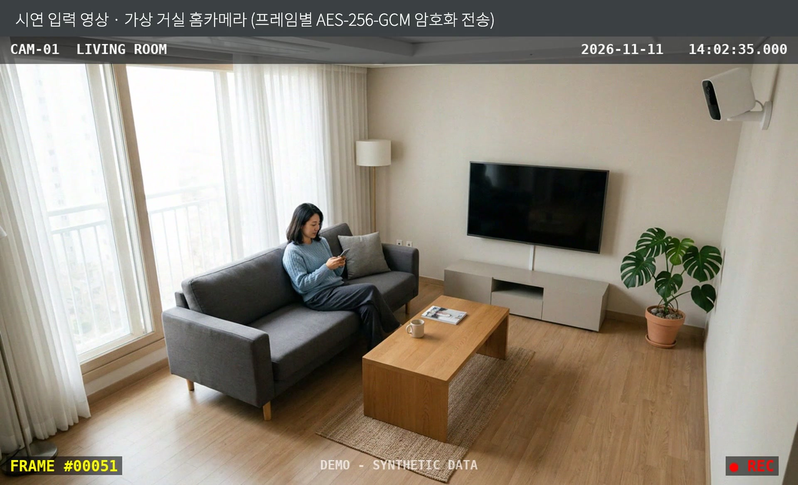
시연 과정 설명
왜 카메라에서 암호화해서 보내는가?
- 1카메라가 평문으로 영상을 보내면 복호화 키가 필요 없으므로, Stage 4에서 인증받지 않은 백도어 컨테이너를 띄워도 평문 영상을 그대로 받아 유출할 수 있게 됩니다.
- 2반면 카메라가 암호화해서 보내고 "검증된 정품 코드에만 Cloud KMS가 복호화 키를 반환"하면, 다른 코드는 영상을 받아도 암호문뿐이라 열람할 수 없습니다.
- 3동시에 정품 서버는 AI 추론을 위해 메모리에서 복호화를 수행하므로, Stage 1·3에서는 "전송·저장을 암호화해도 연산 중인 메모리(Data-in-use)에서 원본이 노출된다"는 위협을 정확히 보여줍니다.
CVM·GPU CC를 모두 끈 상태에서의 실시간 영상 추론
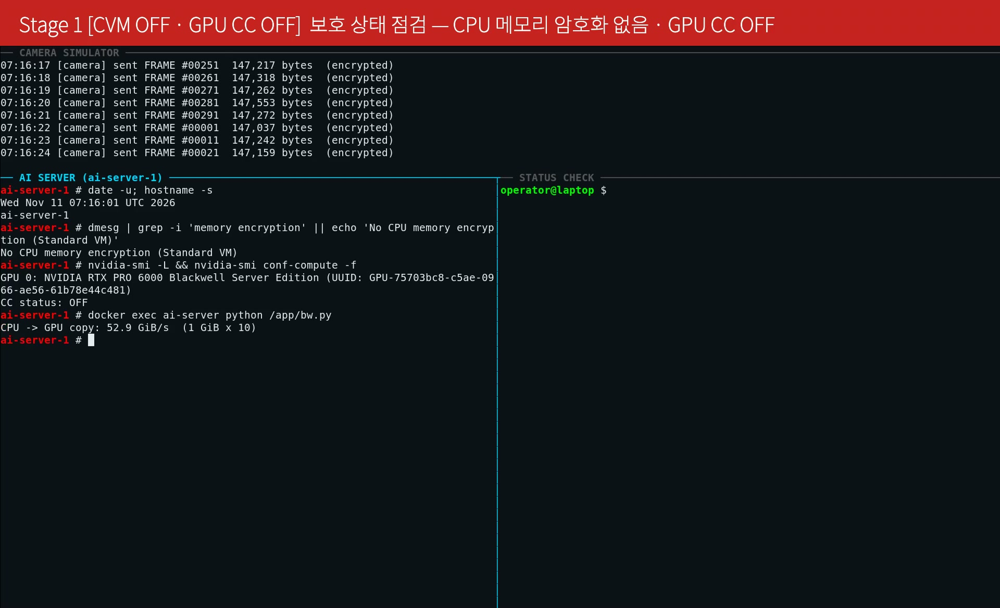
g4-standard-48: CVM(SEV) 미적용, GPU CC status: OFF
실제 서버 녹화 · 핵심 장면
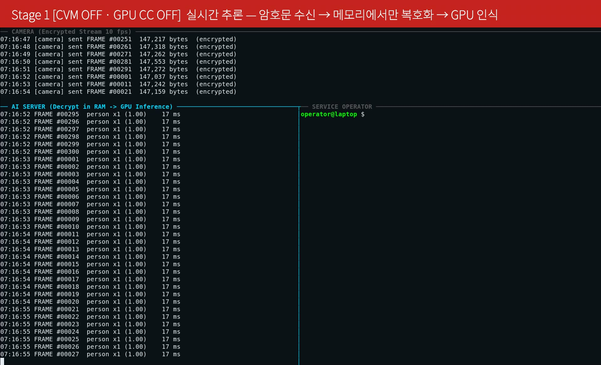
📊 Stage 1 [CVM OFF · GPU CC OFF] 확인 결과
시연 과정 설명
🎥 보호 상태 점검 (좌측 하단 AI SERVER 창)
- 1CVM OFF 확인: 커널 로그(
dmesg)에 메모리 암호화 항목이 없어No CPU memory encryption (Standard VM)이 출력됩니다. → CPU 메모리(RAM)가 평문 상태입니다. - 2GPU CC OFF 확인:
nvidia-smi conf-compute -f결과CC status: OFF가 출력됩니다. → CPU↔GPU 전송 구간과 GPU 메모리에 하드웨어 보호가 없습니다. - 3CPU→GPU 평문 복사 확인: 테스트 데이터를 CPU 메모리에서 GPU로 복사합니다. → 암호화 경로(바운스 버퍼) 없이 평문 그대로 GPU로 전달됩니다. Stage 3에서는 같은 복사가 암호화 경로를 거칩니다.
※ 상단 CAMERA 창: 점검 중에도 카메라는 암호화 프레임(encrypted)을 계속 전송 중 — "전송은 암호화, 서버는 무방비" 상태
🎥 실시간 암호문 수신 & GPU 추론
- 1암호문 전송 (상단 CAMERA 창): 카메라가 프레임마다 AES-256-GCM으로 암호화한 약 147KB 데이터를 초당 10장씩 보냅니다. 모든 줄에
(encrypted)가 표시됩니다. ※ 카메라 창은 10프레임마다 1줄씩 요약 출력하므로, 매 프레임을 출력하는 서버 창보다 번호가 띄엄띄엄 보입니다. - 2메모리 복호화 → GPU 추론 (좌측 AI SERVER 창): 서버는 받은 암호문을 RAM 안에서만 복호화해 RTX PRO 6000에서 객체 인식을 수행하고,
FRAME #00297 person x1 (1.00)처럼 결과만 한 줄씩 출력합니다. - 3무저장 구조: 원본 영상은 디스크·버킷에 저장하지 않고(0 바이트), 최근 30장만 메모리에 잠시 보관했다가 덮어씁니다.
- 4운영자 대기 (우측 SERVICE OPERATOR 창): 서버 관리 권한을 가진 운영자가 대기 중인 상태입니다. 다음 슬라이드에서 이 운영자가 서버 메모리를 읽습니다.
서버 운영자가 메모리를 읽자 고객의 거실이 그대로 노출됨
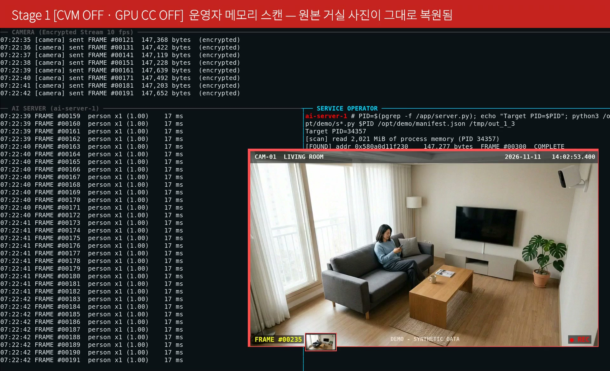
시연 과정 설명
- 1서비스 운영자 접속: 서버 관리자 권한을 가진 운영자가 실행 중인 AI 추론 서버(
ai-server-1)에 SSH로 접속합니다. - 2실시간 프로세스 메모리 스캔: 추론 프로세스(
PID 34357)의 익명 힙 메모리 약 2.0 GB를 스캔하여 JPEG 세그먼트(FF D8 FF~FF D9)를 추출합니다. - 3원본 지문 100% 일치 확인: 최근 링 버퍼에 있던 프레임들이 온전한(
COMPLETE) 상태로 추출되며, 사전 기록된 원본 프레임 SHA-256 해시와 100% 일치함이 확인됩니다. - 4거실 화면 노출: 추출된 파일을 열자 고객 거실 화면(
CAM-01 LIVING ROOM)이 선명하게 나타납니다.
만약 CVM만 켜고 GPU CC가 꺼져 있다면?
시연 과정 설명
왜 반쪽 구성을 허용하지 않는가?
- 1CPU 전용 키의 한계: CVM(AMD SEV)은 CPU RAM을 VM 고유 키로 암호화하지만, 외장 PCIe 장치인 GPU는 CPU 내부의 메모리 암호화 키를 공유받지 못합니다.
- 2공유 바운스 버퍼 경유 필수: 따라서 CPU가 GPU로 영상 텐서를 보낼 때는 반드시 암호화되지 않은 공유 메모리(SWIOTLB 바운스 버퍼)와 PCIe 버스를 거쳐야 합니다.
- 3NVIDIA GPU CC의 역할: GPU CC가 켜지면 드라이버와 GPU가 암호화 세션(SPDM)을 맺고, 바운스 버퍼에 넣기 전에 AES-256-GCM으로 재암호화하여 전송합니다. GPU 내부 메모리는 하드웨어 보호 영역(CPR)으로 외부 접근을 차단합니다.
g4-standard-48에 CVM을 활성화하면 GPU 역시 자동으로 CC State: ON 상태로 연결됩니다.
옵션 하나로 CPU 메모리(CVM)와 GPU 전송 구간(GPU CC) 동시 암호화
--confidential-compute-type=SEV 옵션 하나로 CVM(AMD SEV)과 RTX PRO 6000 GPU CC가 동시에 활성화되며, 애플리케이션 코드 변경 없이 동일한 AI 추론 서비스가 그대로 동작합니다.
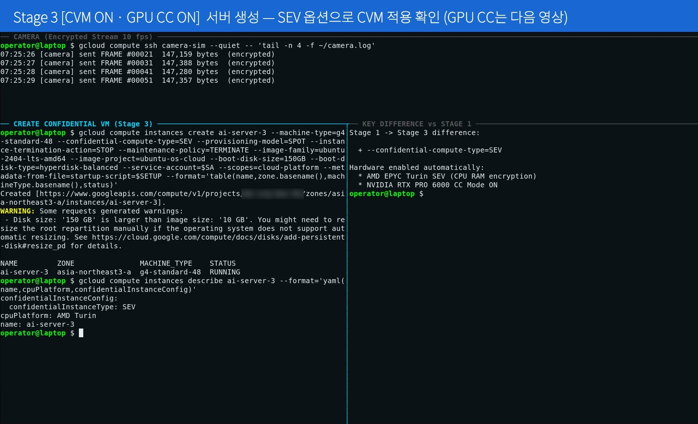
--confidential-compute-type=SEV 옵션만 추가 → confidentialInstanceType: SEV 확인 (GPU CC ON은 ② 영상에서 확인)
실제 서버 녹화 · 핵심 장면
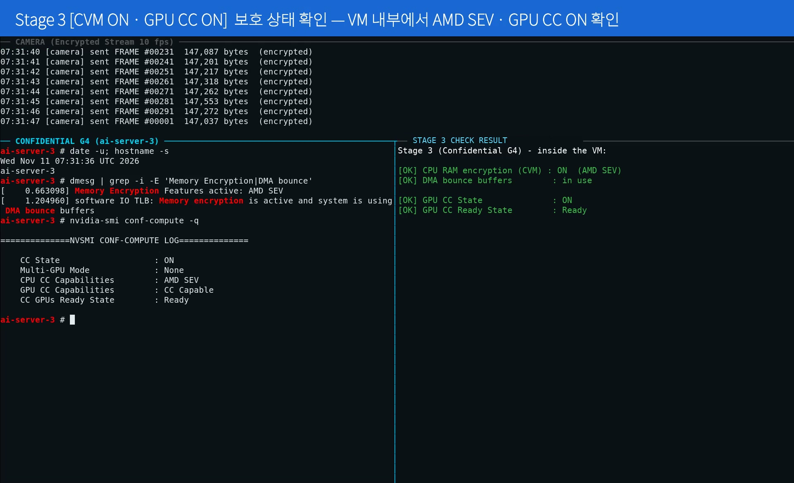
Memory Encryption Features active: AMD SEV, DMA bounce buffers, CC State: ON 확인
실제 서버 녹화 · 핵심 장면
시연 과정 설명
🎥 ① 서버 생성 및 CVM(SEV) 적용 확인
- 1옵션 하나만 추가: Stage 1과 같은
gcloud compute instances create명령에--confidential-compute-type=SEV만 추가합니다. GPU 관련 옵션은 넣지 않습니다. - 2CVM 적용 확인: 생성 후
describe결과confidentialInstanceType: SEV,cpuPlatform: AMD Turin이 출력됩니다. → CVM으로 생성되었습니다. - 3GPU CC는 ② 탭에서 확인: GPU CC가 실제로 켜졌는지는 VM 내부에서만 확인할 수 있으므로 다음 탭에서 검증합니다.
🎥 ② 서버 내부에서 CVM · GPU CC ON 확인
- 1CVM ON 확인: 커널 로그(
dmesg)에Memory Encryption Features active: AMD SEV와DMA bounce buffers사용이 출력됩니다. → CPU 메모리가 암호화되어 있습니다. - 2GPU CC ON 확인:
nvidia-smi conf-compute -q결과CC State: ON,CPU CC Capabilities: AMD SEV,CC GPUs Ready State: Ready가 출력됩니다. → GPU CC가 켜져 있고 사용 가능한 상태입니다. - 3CPU↔GPU 전송 암호화 경로: CVM과 GPU CC가 함께 켜지면 CPU→GPU 데이터는 CPU에서 AES-256-GCM 암호화 → 바운스 버퍼 → GPU 내부 복호화 경로로만 전달됩니다.
연결된 GPU가 진짜 GPU CC 활성 상태인지 하드웨어 서명으로 검증
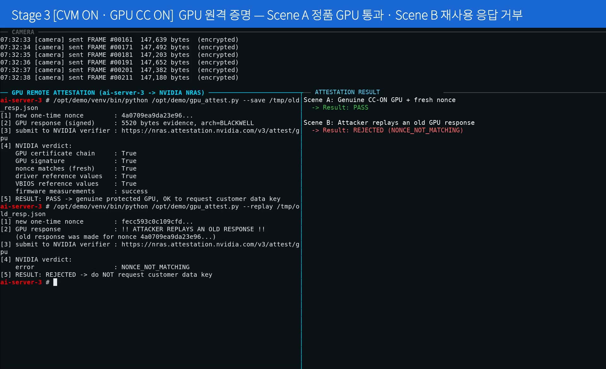
NONCE_NOT_MATCHING으로 즉시 거부
실제 서버 녹화 · 핵심 장면
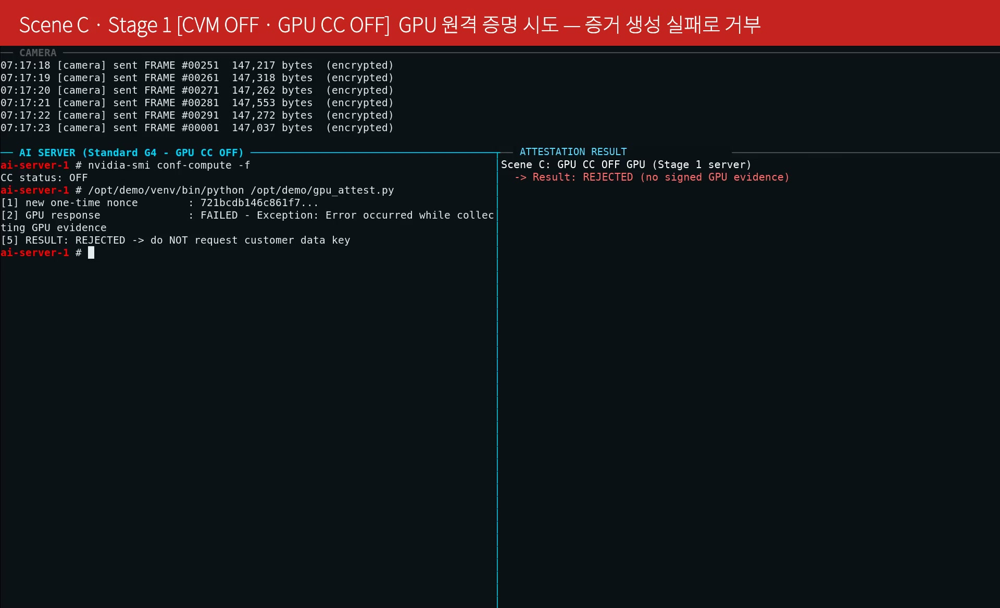
시연 과정 설명
🎥 Scene A 정품 GPU 통과 & Scene B 응답 재사용 거부
- A정품 GPU CC ON (통과): 새 1회용 확인 숫자(
nonce)로 GPU에 서명된 증거를 요청해 NVIDIA 증명 서버(NRAS)에 제출합니다. 인증서 체인(Blackwell 칩 고유 키 → NVIDIA 루트), 서명,nonce일치, 드라이버(595.58.03)·VBIOS 기준값(RIM)이 모두True→ PASS. - B예전 응답 재사용 공격 (거부): Scene A에서 통과했던 진짜 응답을 저장해 두었다가 새 요청에 끼워 넣습니다. NVIDIA가
nonce불일치(NONCE_NOT_MATCHING)를 감지해 REJECTED → 고객 데이터 키를 요청하지 않습니다.
🎥 Scene C GPU CC OFF(Stage 1 서버) 증명 거부
- CGPU CC OFF (거부): GPU CC가 꺼진 Stage 1 서버에서 같은 증명을 시도합니다. CC 모드가 아닌 GPU는 유효한 SPDM 서명 증거를 생성할 수 없어 증거 수집 단계에서 즉시 REJECTED됩니다.
- ·의미: 가짜(에뮬레이션) GPU나 보호가 꺼진 GPU는 정품 보호 GPU로 위장할 수 없습니다.
클라우드 인프라(Google) 시점의 격리와 GPU 디버깅 통로 차단
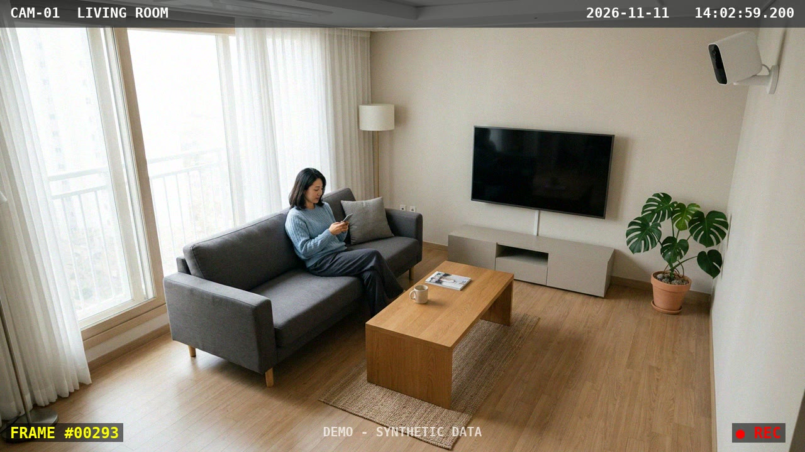
CPU가 이 VM의 키로 자동 복호화 → 평문 사진 노출
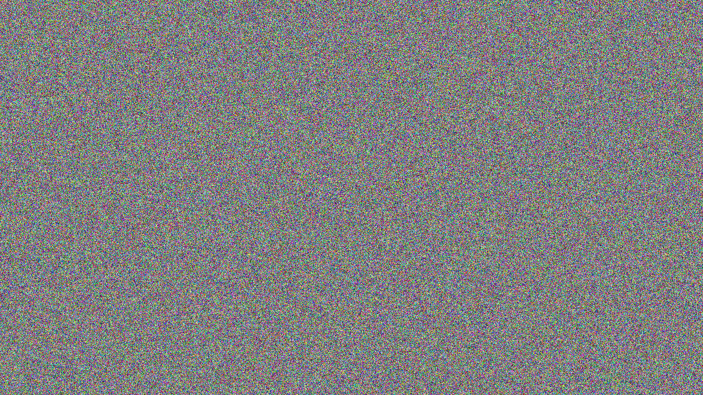
VM 전용 키가 없어 암호문(노이즈)만 보임
※ 설명용 그림: 오른쪽은 실제 호스트 메모리 덤프가 아니라, 왼쪽 실제 프레임을 AES로 암호화해 시각화한 것입니다.
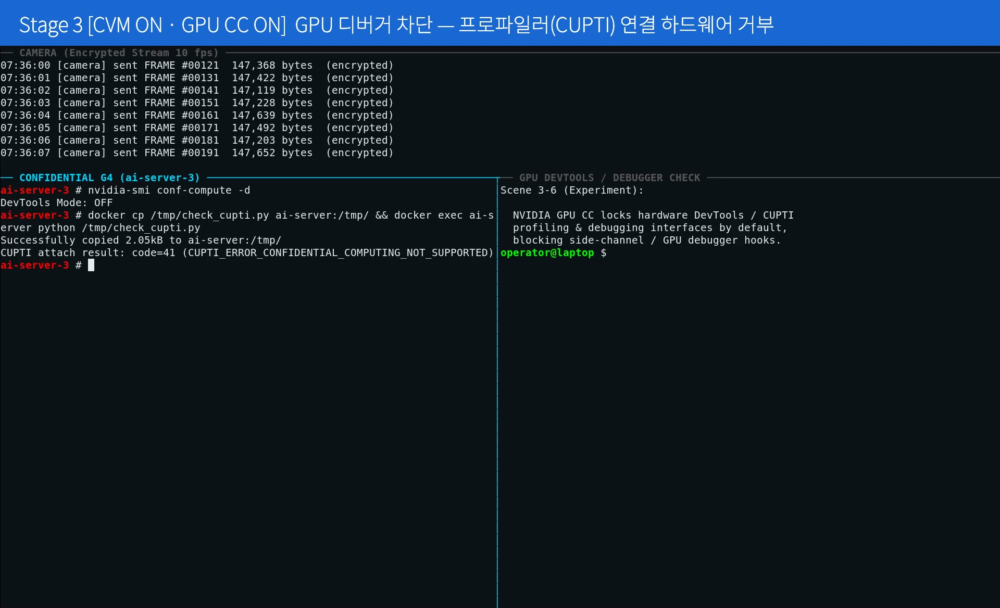
DevTools Mode: OFF 상태에서 CUPTI 연결 시도 → CUPTI_ERROR_CONFIDENTIAL_COMPUTING_NOT_SUPPORTED 거부
실제 서버 녹화 · 핵심 장면
시연 과정 설명
🎨 VM 내부 vs VM 외부(Google) 시점 비교
- 1같은 메모리, 다른 시점: VM 안에서는 CPU가 자동 복호화해 원본 사진이 보이지만, VM 밖(호스트·하이퍼바이저)에는 VM 전용 키가 없어 암호문 노이즈만 존재합니다.
- 2클라우드 인프라 계층 배제: Google Cloud 신뢰 경계 정의에 따라 클라우드 관리자, 호스트 OS, 하이퍼바이저, BIOS는 모두 신뢰 경계 밖에 놓입니다.
🎥 GPU 디버거·프로파일러(CUPTI) 차단 실증
- 1DevTools 모드 확인:
nvidia-smi conf-compute -d결과DevTools Mode: OFF가 출력됩니다. - 2디버거 연결 시도 → 거부: 운영자 권한으로 GPU 성능 카운터·디버거 인터페이스(
libcupti) 연결을 시도하면CUPTI_ERROR_CONFIDENTIAL_COMPUTING_NOT_SUPPORTED(code=41)로 하드웨어 정책에 의해 거부됩니다.
CVM·GPU CC를 켜도 서버 안에 들어온 운영자에게는 여전히 보임
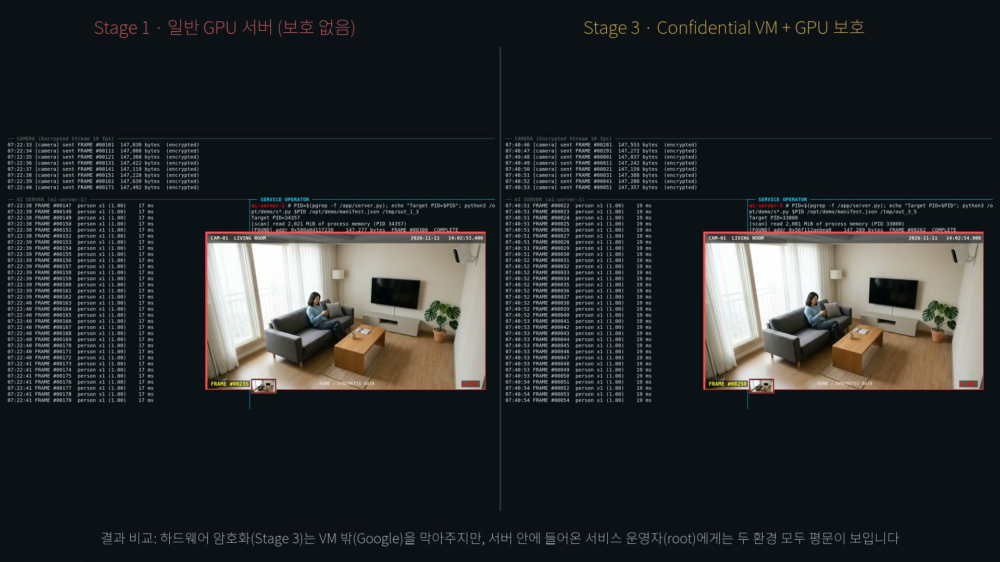
시연 과정 설명
왜 Stage 4(Confidential Space)가 필수인가?
- 1동일한 검증 재실행: CVM(SEV)과 GPU CC가 모두 켜진 Stage 3 서버에서 Stage 1과 동일한 조건으로 점검하자, 2,081 MiB 메모리에서 원본 프레임이 그대로 확인됩니다.
- 2이유 (설계상 신뢰 경계): 하드웨어 메모리 암호화는 노트북 디스크 암호화와 같아서 외부 탈취는 막아주지만, 정상 로그인한 게스트 OS 관리자(
root)는 여전히 신뢰 경계 안에 있기 때문입니다. - 3결론: "Google은 못 본다"를 넘어 "서비스 운영자조차 볼 수 없다"고 선언하려면 운영자의 서버 진입을 막고 검증된 코드에만 키를 주는 Stage 4로 가야 합니다.
서버가 아닌 '검증된 정품 코드'에만 복호화 키 지급
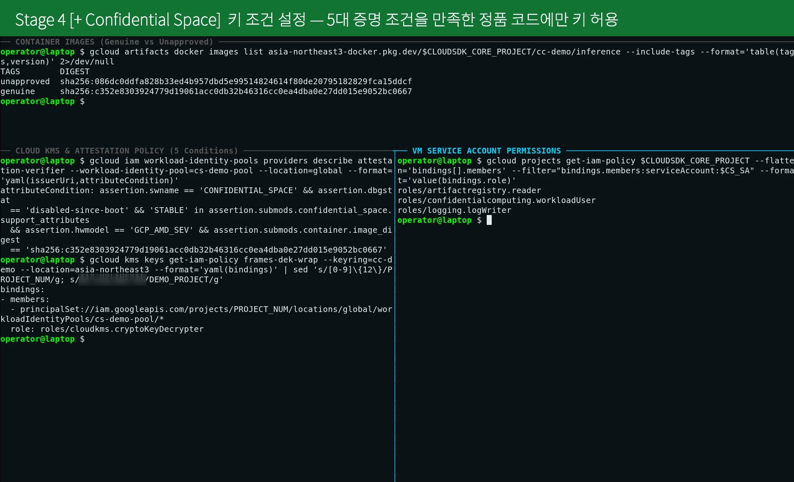
c352e8...) vs 비승인(086dc0...) 이미지 지문 확인 및 Workload Identity Pool 5대 조건 · KMS IAM 검증
실제 정책 녹화
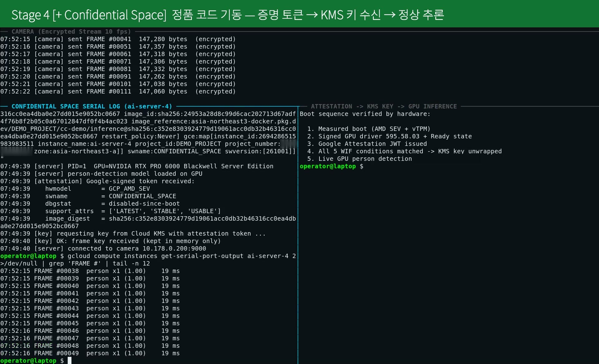
595.58.03) 자동 적재 → 증명 토큰 발급 → [key] OK → 실시간 추론
실제 서버 녹화 · 핵심 장면
시연 과정 설명
🎥 5대 증명 조건 & KMS 권한 설정
- 1정품 vs 비승인 이미지 (상단 창): 정품 추론 컨테이너(
sha256:c352e8...)와 코드 1줄을 바꾼 비승인 컨테이너는 지문(digest)이 서로 다릅니다. - 2키 지급 5대 조건 (좌측 창): Google 증명 토큰 발급자 ·
swname == 'CONFIDENTIAL_SPACE'·dbgstat == 'disabled-since-boot'+'STABLE'(운영 이미지) ·hwmodel == 'GCP_AMD_SEV'·image_digest == 'sha256:c352e830...'(정품 코드)를 모두 만족해야 합니다. - 3KMS 키 권한 대상 (좌측 창): 복호화 권한(
cryptoKeyDecrypter)은 위 조건을 통과한 워크로드(cs-demo-pool/*)에만 부여되어 있습니다. - 4VM 서비스 계정 권한 (우측 창): VM 계정에는 이미지 다운로드·증명 토큰 발급·로그 쓰기 권한만 있고 KMS 권한은 전혀 없습니다. → 운영자가 VM이나 서비스 계정을 쥐고 있어도 키를 꺼낼 수 없습니다.
→ GA 전에는 정품 코드 안에서 GPU 원격 증명 통과 후에만 키를 요청하도록 보완할 수 있습니다.
🎥 Confidential Space 기동 & 정상 추론
- 1자동 부팅: 사람이 접속해 컨테이너를 띄우지 않습니다. 부팅 시 Confidential Space 런처가 지정된 단일 정품 컨테이너의 지문을 직접 측정해 실행합니다.
- 2서명 드라이버 자동 적재: GPU 드라이버(
595.58.03)를 이미지가 자동으로 적재합니다. - 3증명 토큰 → 키 수신: Google 증명 토큰으로 5대 조건을 통과해 Cloud KMS에서 복호화 키를 받습니다(
[key] OK). - 4정상 추론: 받은 키로 메모리 안에서만 영상을 복호화해 GPU 추론을 정상 수행합니다.
프로젝트 최고 권한 운영자라도 서버 진입 및 실행 명령 변경 불가
tee-cmd)을 바꿔도 런처가 실행 정책 위반으로 컨테이너 실행을 거부하고 서버를 종료합니다."
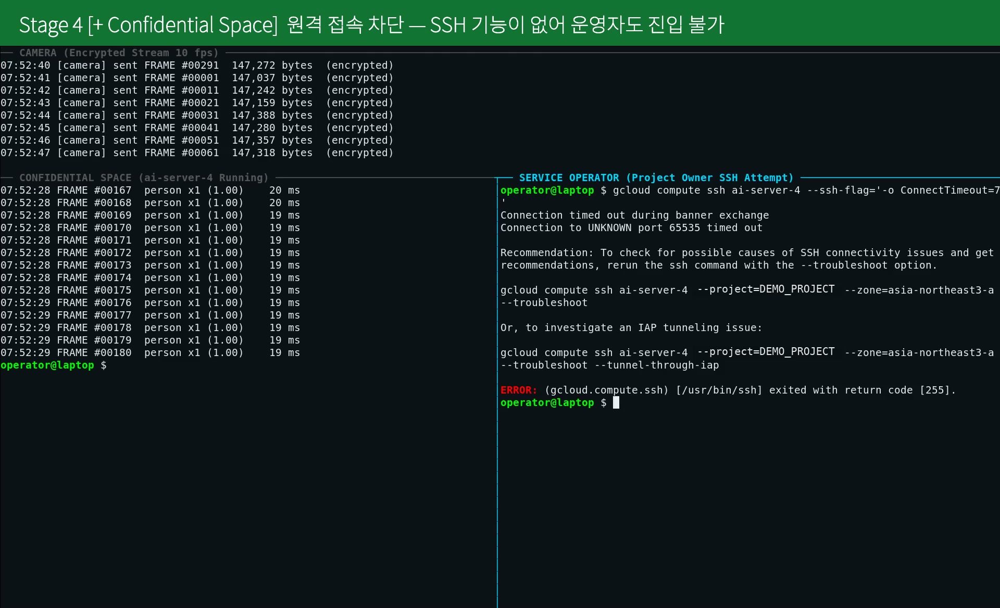
return code [255])
실제 서버 녹화 · 핵심 장면
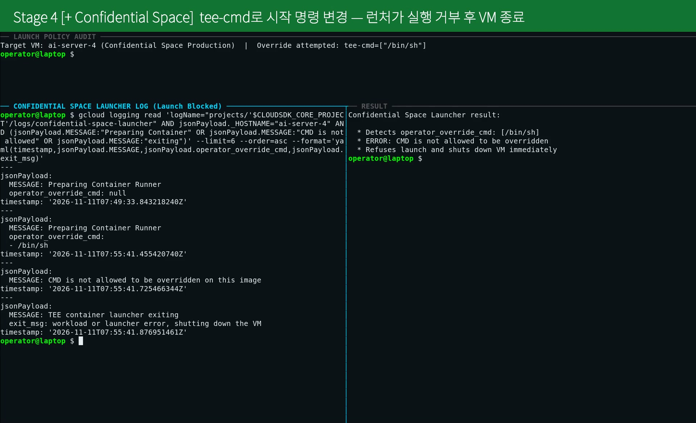
tee-cmd=["/bin/sh"] 주입 후 재시작 시 CMD is not allowed to be overridden on this image 출력 후 즉시 종료
실제 서버 녹화 · 핵심 장면
시연 과정 설명
🎥 운영자 원격 접속 시도 → 차단
- 1SSH 접속 시도: 추론이 정상 동작 중인 Stage 4 인스턴스(좌측 창)에 프로젝트 소유자 권한의 서비스 운영자가 SSH 접속을 시도합니다.
- 2결과: 운영 이미지에는 원격 접속 기능과 쉘 진입 경로가 없어 접속이 타임아웃되고 거부됩니다(
return code [255]). 좌측 창의 추론은 영향 없이 계속됩니다.
🎥 tee-cmd로 시작 명령 변경 → 런처가 실행 거부
| 구분 | VM 메타데이터 tee-cmd | 실제 시작 명령 |
|---|---|---|
| 원래 (정품) | 없음 | 이미지에 고정된 python /app/server.py (추론 서버) |
| 변경 시도 | ["/bin/sh"] | 쉘로 바꿔 실행 시도 → 런처가 거부 |
- 1메타데이터 변경은 가능: 운영자가 정품 이미지 지문은 그대로 둔 채 VM 메타데이터에
tee-cmd=["/bin/sh"]를 추가하고 재시작합니다. 메타데이터 수정 자체는 정상 완료됩니다. - 2런처가 실행 정책 위반 감지: 부팅 시 Confidential Space 런처가 이미지에 고정된 실행 정책(명령 변경 불허)과 대조해
CMD is not allowed to be overridden on this image를 출력합니다. - 3컨테이너 미실행, VM 종료: 컨테이너를 띄우지 않고 VM이 즉시 종료됩니다.
코드를 단 한 줄만 바꿔도 복호화 키가 열리지 않음
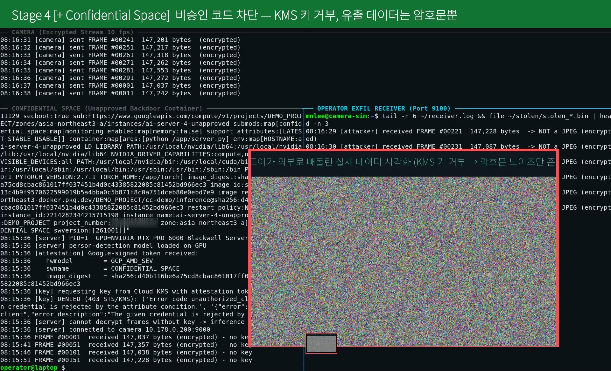
rejected by the attribute condition) / 우: 공격자 수신 서버에 도착한 암호문 노이즈
실제 서버 녹화 · 핵심 장면
시연 과정 설명
- 1인증받지 않은 컨테이너 배포: 정품 추론 코드에 외부 수신 서버(
9100번 포트)로 프레임을 전송하는 코드 단 1줄만 추가해 빌드하고 Confidential Space에 배포합니다. - 2부팅은 허용하되 정직하게 지문 기록: Confidential Space는 컨테이너를 실행하지만, 런처가 측정한 실제 지문(
sha256:d40b116b...)을 Google 증명 토큰에 그대로 기록합니다. - 3STS/KMS 단계에서 키 불출 원천 거부: 컨테이너가 키를 요청하는 순간 정품 지문(
sha256:c352e830...)과 불일치하여The given credential is rejected by the attribute condition에러로 거부됩니다. - 4유출 데이터 무력화: 키가 없으므로 메모리에는 평문 사진이 생성조차 되지 않으며, 공격자 수신 서버가 받은 파일(
147,228 bytes)은NOT a JPEG (encrypted)— 즉 복호화 불가능한 암호문 노이즈뿐입니다.
4단계 실증 결과 종합 및 보안 선언 가이드
CVM ON · GPU CC ON)에 Confidential Space와 증명 기반 키 통제(Stage 4)를 결합하면, "고객 외에는 서비스 운영자도, 클라우드 사업자도 원본 영상을 볼 수 없다"는 기술적 근거가 완성됩니다.
| 검증 항목 | Stage 1 CVM OFF · GPU CC OFF |
Stage 3 CVM ON · GPU CC ON |
Stage 4 CVM ON · GPU CC ON + Confidential Space |
|---|---|---|---|
| CPU 메모리 & CPU↔GPU 전송 보호 | 평문 (보호 없음) | AMD SEV + AES-256-GCM | AMD SEV + AES-256-GCM |
| GPU 진위 증명 & 디버거 차단 | 증명 거부 (CC OFF) |
NVIDIA NRAS 통과 · CUPTI 차단 | 서명 드라이버 자동 적재 · 격리 |
| 서비스 운영자 서버 내부 메모리 접근 | 원본 사진 100% 노출 | 원본 사진 100% 노출 | 원격 접속 제거 · tee-cmd 차단 |
| 비승인 코드 배포 시 영상 유출 | VM 서비스 계정으로 키 획득 | VM 서비스 계정으로 키 획득 | 지문 불일치로 키 거부 · 암호문만 존재 |
구축 단계별 권장 대외 메시지
● Stage 3 구축 시 (Confidential VM / GKE):
"영상이 분석되는 연산 순간(Data-in-use)까지 CPU 메모리와 GPU 전송 구간을 하드웨어로 보호하여, 클라우드 인프라 사업자를 포함한 외부 계층으로부터 고객 데이터를 철저히 격리합니다."
● Stage 4 구축 시 (+ Confidential Space & 증명 기반 키):
"암호화된 영상은 무결성이 증명된 AI 분석 엔진 내부 메모리에서만 복호화 후 즉시 소멸되며, 고객 본인을 제외하고는 클라우드 사업자는 물론 서비스를 운영하는 시스템 관리자조차 원본 영상에 접근할 수 없도록 기술적으로 차단되어 있습니다."
상용 서비스 적용 시 아키텍처 체크포인트
- 1단말(카메라) 측 암호화 유지: 영상이 서버에 도달하기 전 카메라에서 암호화되어야 Stage 4의 증명 기반 키 통제가 유효하게 작동합니다.
- 2키 관리 권한 분리: 상용 환경에서는 서비스 운영자가 KMS 권한 조건을 임의로 완화하지 못하도록 키 관리 프로젝트를 분리하거나 고객/독립 보안 조직 통제하에 운영하는 구성을 권장합니다.
- 3멀티모델 단일 컨테이너 패키징: Confidential Space는 VM당 검증된 단일 컨테이너를 실행하므로, 다중 AI 모델 서빙 시 Triton Inference Server 또는 통합 파이프라인 컨테이너로 구성합니다.